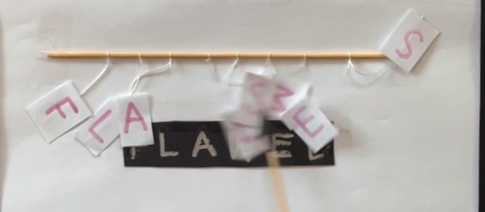
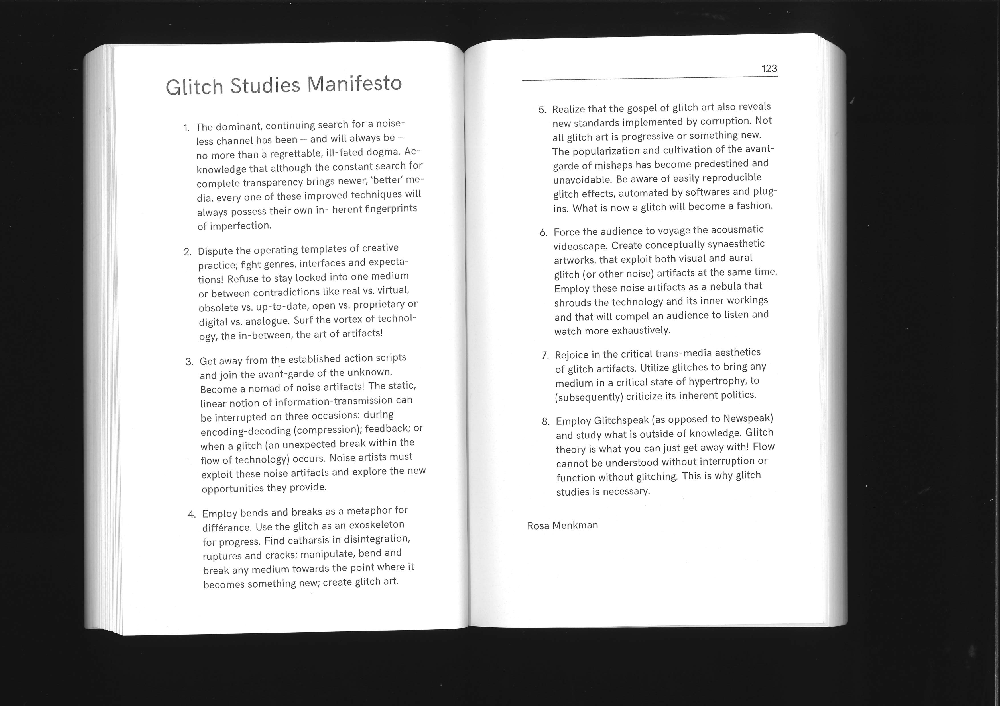
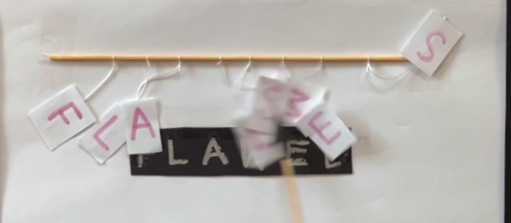
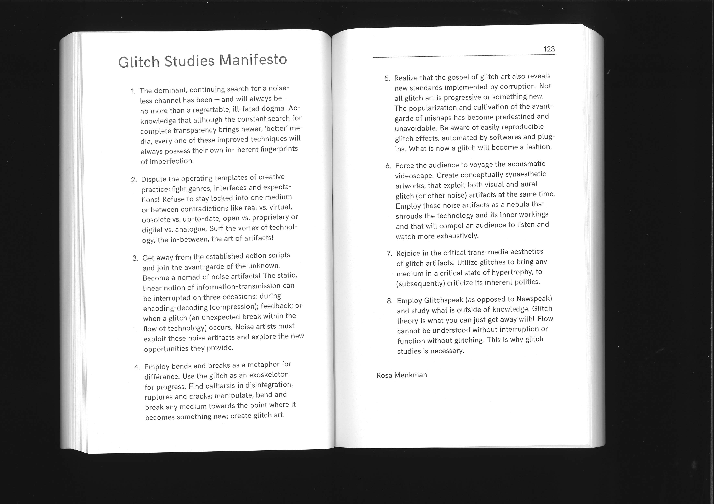

Week 6
Tuesday, 27th August
Class Activities:
In this week’s lesson, we went over our first assignment submission for this course - brief 1 Paper prototypes, where we had to choose a short sentence of maximum 10 words. I chose a sentence from Rosa Menkman’s Glitch Studies Manifesto, which was: “Acknowledge that although the constant search for complete transparency brings newer, ‘better’ media, every one of these improved techniques will always possess their own inherent fingerprints of imperfection.” I shortened it to: “even 'perfect’ media still retains its unique imperfections". We had to interpret this sentence as a paper-prototype of a screen-based interactive media work. This means we only needed to make the paper-prototype, and not the coded digital work. I saw everyone else’s projects and prototypes that day, and it was really interesting seeing how everyone else interpreted their sentence, and how they executed their prototypes. I saw that some people kept it simple and short because it would be easier to code for project 2, and others who made their prototype more elaborate and complex.
Learning Outcomes:
Although I think my paper prototype was definitely too complex to code by myself, I thought this was a really good opportunity to experiment so I could get as much feedback as I could after I submitted it. This project was really helpful in this way, and I got a lot of insight on what I should for my next assignment project, which is to actually code a website (that may or may be completely different to the paper prototype we made).
Helpful Links/Resources:
Glitch Studies Manifesto article: Glitch Studies Manifesto
 


